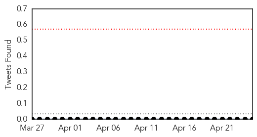

30 Day Trends
Web: 0 alerts, 0 warnings
Twitter: 0 alerts, 0 warnings
Top Articles:
- 0.941
- Salmonella outbreak that infected 132 people linked to bearded dragons bought at pet stores
- 0.810
- ‘Protecting Our Tomorrows’: Anne Geddes puts focus on survivors of meningococcal disease
- 0.808
- Meningitis survivor speaks on World Meningitis Day to support vaccinations
- 0.758
- Salmonella outbreak linked to bearded dragons
- 0.754
- Taiwan CDC announces this yearâs first pneumococcal death in infant and urges parents to get children meeting eligibility criter
- 0.512
- Interactive training halves malaria overdiagnosis and prevents wastage of drugs
Top Tweets:
-
No tweets found for Apr 25, 2014
Web/News Articles

Tweets
Article Locations

Article Confidences